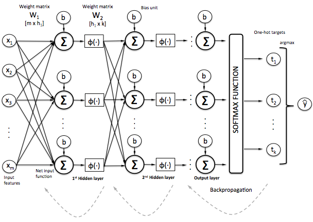
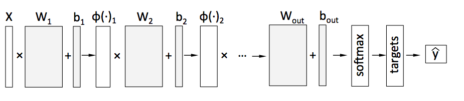
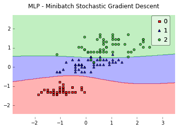

TensorFlow Multi-Layer Perceptron
A multi-layer perceptron class for binary and multi-class classification tasks.
from mlxtend.tf_classifier import TfMultiLayerPerceptron
Overview
(A more detailed tutorial on multi-layer perceptrons is in preparation.)


Please also see the activation function cheatsheet at general_concepts.activation-functions.
References
- Srivastava, Nitish, et al. "Dropout: A simple way to prevent neural networks from overfitting." The Journal of Machine Learning Research 15.1 (2014): 1929-1958.
Examples
Example 1 - Gradient Descent
Each integer in the hidden_layers list argument specifies the number of neurons for the respective layer; via the activations, we specify the activation functions for the individual hidden layer. Below, we initialize a multi-layer perceptron with 1 hidden layer using the logistic sigmoid activation. Furthermore, we train the network via simple gradient descent training by setting optimizer='gradientdescent' and minibatches=1.
from mlxtend.tf_classifier import TfMultiLayerPerceptron
from mlxtend.data import iris_data
from mlxtend.evaluate import plot_decision_regions
import matplotlib.pyplot as plt
# Loading Data
X, y = iris_data()
X = X[:, [0, 3]] # sepal length and petal width
# standardize
X[:,0] = (X[:,0] - X[:,0].mean()) / X[:,0].std()
X[:,1] = (X[:,1] - X[:,1].mean()) / X[:,1].std()
mlp = TfMultiLayerPerceptron(eta=0.5,
epochs=20,
hidden_layers=[10],
activations=['logistic'],
optimizer='gradientdescent',
print_progress=True,
minibatches=1,
random_seed=1)
mlp.fit(X, y)
plt.plot(range(len(mlp.cost_)), mlp.cost_)
plt.xlabel('Iterations')
plt.ylabel('Cost')
plt.show()
Epoch: 20/20 | Cost 0.55 | TrainAcc 0.83

Continue the training if cost could be further decreased via additional epochs. Instead of training the classifier another 20 epochs, we modify the epochs and set them to 550. Also, we want to make sure to set init_weights to False in order to re-use the model parameters from the previous training.
mlp.epochs = 550
mlp.fit(X, y, init_weights=False)
plt.plot(range(len(mlp.cost_)), mlp.cost_)
plt.xlabel('Iterations')
plt.ylabel('Cost')
plt.show()
Epoch: 550/550 | Cost 0.12 | TrainAcc 0.96

plot_decision_regions(X=X, y=y, clf=mlp)
plt.title('Logistic Sigmoid MLP - Gradient Descent')
plt.show()

Predicting Class Labels
print('Predicted class labels:', mlp.predict(X[[0, 99, 149]]))
Predicted class labels: [0 1 2]
Predicting Class Probabilities
print('Predicted class probabilities:\n', mlp.predict_proba(X[[0, 99, 149]]))
Predicted class probabilities:
[[ 9.92696404e-01 7.30253477e-03 1.04788933e-06]
[ 1.58569030e-03 9.77745533e-01 2.06688400e-02]
[ 5.52368738e-06 1.68280467e-01 8.31713974e-01]]
Example 2 - Stochastic Gradient Descent
Stochastic gradient descent training sample by sample can be achieved by setting the number of minibatches equal to the number of samples in the training dataset; everything between minibatches=1 and minibatches=len(y) is "minibatch" stochastic gradient descent. Below, we train a network using 10 minibatches.
from mlxtend.data import iris_data
from mlxtend.evaluate import plot_decision_regions
from mlxtend.tf_classifier import TfMultiLayerPerceptron
import matplotlib.pyplot as plt
# Loading Data
X, y = iris_data()
X = X[:, [0, 3]] # sepal length and petal width
# standardize
X[:,0] = (X[:,0] - X[:,0].mean()) / X[:,0].std()
X[:,1] = (X[:,1] - X[:,1].mean()) / X[:,1].std()
mlp = TfMultiLayerPerceptron(eta=0.5,
epochs=100,
hidden_layers=[10],
activations=['logistic'],
print_progress=True,
optimizer='gradientdescent',
minibatches=10,
random_seed=1)
mlp.fit(X, y)
plt.plot(range(len(mlp.cost_)), mlp.cost_)
plt.xlabel('Iterations')
plt.ylabel('Cost')
plt.show()
plot_decision_regions(X, y, clf=mlp)
plt.title('MLP - Minibatch Stochastic Gradient Descent')
plt.show()
Epoch: 100/100 | Cost 0.13 | TrainAcc 0.95


Example 3 - MNIST
Please note that mnist_data just contains a random 5000-sample subset of MNIST (~10% of the original dataset size) suitable for demonstration purposes regarding computational efficiency.
Although it may be overkill, and the network may terribly overfit the training data, let us initialize a more complex neural network with 2 hidden layers and 200 ReLU (Rectifier Linear Units) each.
from mlxtend.data import mnist_data
from mlxtend.tf_classifier import TfMultiLayerPerceptron
import matplotlib.pyplot as plt
X, y = mnist_data()
mlp = TfMultiLayerPerceptron(eta=0.01,
epochs=30,
hidden_layers=[200, 200],
activations=['relu', 'relu'],
print_progress=1,
minibatches=5,
optimizer='adam',
random_seed=1)
mlp.fit(X, y)
plt.plot(range(len(mlp.cost_)), mlp.cost_)
plt.xlabel('Iterations')
plt.ylabel('Cost')
plt.show()
Epoch: 30/30 | Cost 0.02 | TrainAcc 1.00

import numpy as np
y_pred = mlp.predict(X)
print('Training Accuracy: %.2f%%' % (mlp.score(X, y) * 100))
Training Accuracy: 100.00%
def plot_digit(X, y, idx):
img = X[idx].reshape(28,28)
plt.imshow(img, cmap='Greys', interpolation='nearest')
plt.title('true label: %d' % y[idx])
plt.show()
plot_digit(X, y, 4999)

print('Prediction: %d' % mlp.predict(X[4999, None]))
Prediction: 9
Example 4 -- Training and Validation Accuracies During Training
Training accuracies are collected for each epoch by default. Optionally, we can pass validation dataset during model fitting to compute the validation accuracy values for each epoch. Here, pass 4000 samples from MNIST for training and 1000 samples from MNIST for validation.
from mlxtend.data import mnist_data
from mlxtend.preprocessing import shuffle_arrays_unison
from mlxtend.tf_classifier import TfMultiLayerPerceptron
import matplotlib.pyplot as plt
X, y = mnist_data()
X, y = shuffle_arrays_unison((X, y), random_seed=1)
mlp = TfMultiLayerPerceptron(eta=0.01,
epochs=30,
hidden_layers=[200, 200],
activations=['relu', 'relu'],
print_progress=1,
minibatches=5,
optimizer='adam',
random_seed=1)
mlp.fit(X=X[:4000],
y=y[:4000],
X_valid=X[4000:],
y_valid=y[4000:])
Epoch: 30/30 | Cost 0.00 | TrainAcc 1.00 | ValidAcc 0.86
plt.plot(range(1, mlp.epochs + 1), mlp.train_acc_, label='training')
plt.plot(range(1, mlp.epochs + 1), mlp.valid_acc_, label='validation')
plt.xlabel('Epoch')
plt.ylabel('Accuracy')
plt.legend(loc='lower right')
plt.grid()
plt.show()

Example 5 -- Dropout
The 3 most common techniques for preventing overfitting are Early Termination and Regularization.
In early termination, we stop training the network when we noticed an increasing gap between the training and validation performance. Another method is to apply regularization to reduce the number of parameters in our network and thereby reduce its complexity via this induced bias. Popular examples of regularization are L2 & L1 regularization, which are essentially "penalties" against large weights that are added to the cost function. For more details, please see the documentation page at general_concepts/regularization-linear. (The multi-layer perceptron implementation supports L1 and L2 regularization via the l1 and l2 initialization parameters.)
Another regularization technique, next to L1 and L2 regularization, is dropout. In dropout, we simply "cancel" half of the "neural" connections between layers during training -- randomly. As a consequence, our neural network can never rely on any given activation to be present. Therefore, the network will attempt to learn a redundant representation just to make sure that at least some useful information remains during in epoch. As weird as it sounds, in practice, dropout makes our network more robust and helps reducing the degree of overfitting. However, keep in mind that dropout is only applied during training; during testing, evaluation, and predictions on new data, we want something that's deterministic.
from mlxtend.data import mnist_data
from mlxtend.preprocessing import shuffle_arrays_unison
from mlxtend.tf_classifier import TfMultiLayerPerceptron
import matplotlib.pyplot as plt
X, y = mnist_data()
X, y = shuffle_arrays_unison((X, y), random_seed=1)
mlp = TfMultiLayerPerceptron(eta=0.01,
epochs=75,
hidden_layers=[200, 200],
activations=['relu', 'relu'],
print_progress=1,
minibatches=5,
optimizer='adam',
random_seed=1,
dropout=0.55)
mlp.fit(X=X[:4000],
y=y[:4000],
X_valid=X[4000:],
y_valid=y[4000:])
Epoch: 75/75 | Cost 639.21 | TrainAcc 1.00 | ValidAcc 0.90
plt.plot(range(1, mlp.epochs + 1), mlp.train_acc_, label='training')
plt.plot(range(1, mlp.epochs + 1), mlp.valid_acc_, label='validation')
plt.xlabel('Epoch')
plt.ylabel('Accuracy')
plt.legend(loc='lower right')
plt.grid()
plt.show()

API
TfMultiLayerPerceptron(eta=0.5, epochs=50, hidden_layers=[50, 10], activations=['logistic', 'logistic'], optimizer='gradientdescent', momentum=0.0, l1=0.0, l2=0.0, dropout=1.0, minibatches=1, random_seed=None, print_progress=0, dtype=None)
Multi-layer perceptron classifier.
Parameters
-
eta: float (default: 0.5)Learning rate (between 0.0 and 1.0)
-
epochs: int (default: 50)Passes over the training dataset.
-
hidden_layers: list (default: [50, 10])Number of units per hidden layer. By default 50 units in the first hidden layer, and 10 hidden units in the second hidden layer.
-
activations: list (default: ['logistic', 'logistic'])Activation functions for each layer. Available actiavtion functions: "logistic", "relu", "tanh", "relu6", "elu", "softplus", "softsign"
-
optimizer: str (default: "gradientdescent")Optimizer to minimize the cost function: "gradientdescent", "momentum", "adam", "ftrl", "adagrad"
-
momentum: float (default: 0.0)Momentum constant for momentum learning; only applies if optimizer='momentum'
-
l1: float (default: 0.0)L1 regularization strength; only applies if optimizer='ftrl'
-
l2: float (default: 0.0)regularization strength; only applies if optimizer='ftrl'
-
dropout: float (default: 1.0)A float between in the range (0.0, 1.0] to specify the probability that each element is kept.
-
minibatches: int (default: 1)Divide the training data into k minibatches for accelerated stochastic gradient descent learning. Gradient Descent Learning if
minibatches= 1 Stochastic Gradient Descent learning ifminibatches= len(y) Minibatch learning ifminibatches> 1 -
random_seed: int (default: None)Set random state for shuffling and initializing the weights.
-
print_progress: int (default: 0)Prints progress in fitting to stderr. 0: No output 1: Epochs elapsed and cost 2: 1 plus time elapsed 3: 2 plus estimated time until completion
-
dtype: Array-type (default: None)Uses tensorflow.float32 if None.
Attributes
-
weights_: 2d-array, shape=[n_features, n_classes]Weights after fitting.
-
biases_: 1D-array, shape=[n_classes]Bias units after fitting.
-
cost_: listList of floats, the average cross_entropy for each epoch.
Methods
fit(X, y, init_weights=True, override_minibatches=None, n_classes=None, X_valid=None, y_valid=None)
Learn weight coefficients from training data.
Parameters
-
X: {array-like, sparse matrix}, shape = [n_samples, n_features]Training vectors, where n_samples is the number of samples and n_features is the number of features.
-
y: array-like, shape = [n_samples]Target values.
-
init_weights: bool (default: True)(Re)initializes weights to small random floats if True.
-
override_minibatches: int or None (default: None)Uses a different number of minibatches for this session.
-
n_classes: int (default: None)A positive integer to declare the number of class labels if not all class labels are present in a partial training set. Gets the number of class labels automatically if None. Ignored if init_weights=False.
-
X_valid: {array-like, sparse matrix}, shape = [n_samples, n_features]Optional validation set to store the validation accuracy values for each epoch via self.valid_acc_
-
y_valid: array-like, shape = [n_samples]Target values for X_valid
Returns
self: object
predict(X)
Predict class labels of X.
Parameters
-
X: {array-like, sparse matrix}, shape = [n_samples, n_features]Training vectors, where n_samples is the number of samples and n_features is the number of features.
Returns
-
class_labels: array-like, shape = [n_samples]Predicted class labels.
predict_proba(X)
Predict class probabilities of X from the net input.
Parameters
-
X: {array-like, sparse matrix}, shape = [n_samples, n_features]Training vectors, where n_samples is the number of samples and n_features is the number of features.
Returns
Class probabilties: array-like, shape= [n_samples, n_classes]
score(X, y)
Compute the prediction accuracy
Parameters
-
X: {array-like, sparse matrix}, shape = [n_samples, n_features]Training vectors, where n_samples is the number of samples and n_features is the number of features.
-
y: array-like, shape = [n_samples]Target values (true class labels).
Returns
-
acc: floatThe prediction accuracy as a float between 0.0 and 1.0 (perfect score).